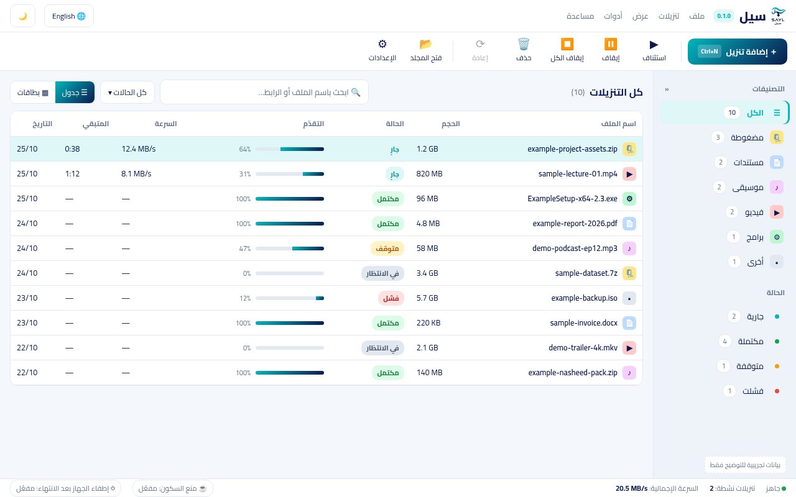

التنزيل يتدفّق
كالسيل.
يقسّم سيل الملف على عدة اتصالات متوازية في وقت واحد، وإذا انقطع الإنترنت أو أغلقت الجهاز، يكمل التنزيل بدقة من آخر بايت وصل.
واجهة هادئة تركز على إنجازك
بلا نوافذ منبثقة مزعجة، وبلا إعلانات، وبالعربية أولًا مع دعم كامل للإنجليزية والوضعين الفاتح والداكن.

ما يقدّمه سيل من اليوم الأول
صُمم ليحل مشكلات التنزيل الحقيقية على ويندوز: سرعة أعلى، استئناف موثوق، وتجربة تحترم وقتك وخصوصيتك.
تنزيل أسرع بالتقسيم
يُقسَم الملف إلى عدة أجزاء متوازية ينزل كل منها عبر اتصال مستقل، لاستغلال أقصى سرعة يوفرها اتصالك بالإنترنت.
استئناف من حيث توقّف
انقطع الإنترنت أو أُغلق الجهاز؟ يحفظ سيل نقاط التقدم في ملف مؤقت (.part) ويكمل من آخر بايت مسجل دون إعادة تنزيل ما اكتمل.
عربي وإنجليزي أصيل
واجهة مكتوبة بعناية تبدأ بالعربية من اليمين إلى اليسار، مع خط مريح للقراءة وإمكانية التبديل إلى الإنجليزية في أي لحظة.
اسحب وأفلت مباشرة
اسحب أي رابط من المتصفح أو أي ملف نصي وأفلته داخل نافذة سيل ليبدأ فحصه وتنزيله في الحال.
تصنيف تلقائي وبحث سريع
تُصنّف الملفات تلقائيًا إلى فيديو وصوت ومستندات وبرامج ومضغوطة، مع شريط بحث فوري يجد ملفاتك بالاسم أو الرابط.
أداة سطر أوامر مستقلة
أمر sayl متوفر لمحبي الطرفية وPowerShell لإضافة التنزيلات وإدارتها واسترجاعها ودمجها في السكربتات.
من المتصفح إلى سيل مباشرة
ثبّت إضافة سيل على Chrome أو Edge لنقل التنزيلات تلقائيًا بمجرد الضغط عليها. وإن أردت الاختيار، فانقر بزر الفأرة الأيمن على أي رابط واختر «التحميل باستخدام سيل».
PS> sayl add https://example.org/package.zip --connections 8
[0192a83f] Task queued · 1.42 GB
# عرض المهام الجارية
PS> sayl list
0192a83f Downloading 68% 42.4 MB/s ETA 1m 12s
# استرجاع المهام بعد إغلاق مفاجئ
PS> sayl recover
Recovered 2 non-terminal tasks to Paused
تنزيل الفيديو بالجودة التي تختارها
زر مباشر لاختيار دقة الفيديو المفضلة أو حفظ المسار الصوتي وحده دون برامج وسيطة معقدة.